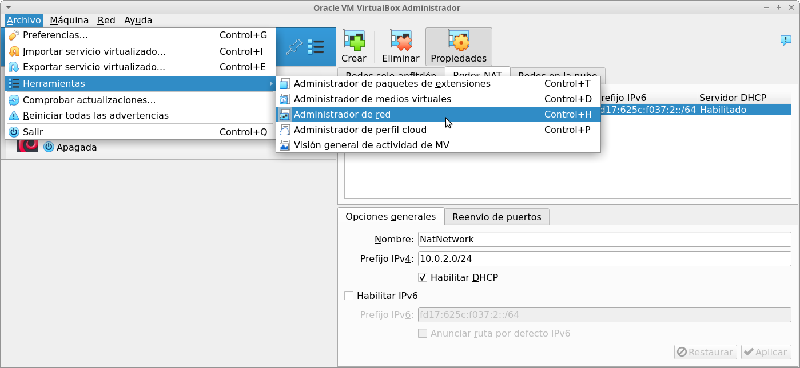
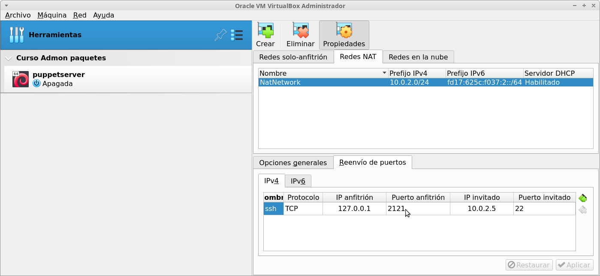

Habilitar acceso ssh desde la máquina anfitriona a máquinas virtuales con red en modo NAT
Supongamos que hemos configurado una red NAT en VirtualBox para que las máquinas virtuales se encuentren aisladas pero, al mismo tiempo, poder acceder a ellas desde el anfitrión mediante ssh.
Para ello, tenemos que acceder al menú Archivo -> Herramientas -> Administración de red:

Como podéis observar en la imagen anterior, tenemos creada una red cuyo nombre es NatNetwork, con direccionamiento 10.0.2.0/24 y el servicio DHCP habilitado.
Para habilitar el acceso a la máquina virtual cuya IP es 10.0.0.5, accedemos a la pestaña "Reenvío de puertos" y agregamos la regla que podéis ver a continuación:

Fijaos en que estamos diciendo que cuando se acceda a la IP de localhost del anfitrión (127.0.0.1) en el puerto 2121, se debe redirigir el tráfico al puerto 22 de la máquina cuya IP es 10.0.2.5, que es donde escucha el servicio ssh.
Así cuando queramos acceder a la máquina virtual desde la máquina anfitriona, tan sólo tenemos que hacer es abrir un terminal y realizar un ssh de la siguiente manera:
| $ ssh -p 2121 root@127.0.0.1 |
Naturalmente, podemos acceder con cualquier usuario y, cuando tratemos de acceder, nos solicitará la contraseña del usuario en cuestión.